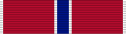

Bronze Star Medal
DecorationBSM
For heroic or meritorious achievement or service in connection with military operations against an armed enemy.
Check your eligibility and build your ribbon rackHow you get it
A decoration must be officially awarded. Meeting the standard isn't enough: someone has to recommend you and the approval authority has to sign off. The citation and special order are your proof.
Approval: Approved at the level set in DAFMAN 36-2806, Military Awards: Criteria and Procedures.
It belongs on your record if
- You received it: a citation and special order were issued to you, or it's on your DD-214 or personnel record
- It was approved, but it's missing from your DD-214 or personnel record
What it's awarded for
- Performed heroism in ground combat, of a lesser degree than required for the Silver Star
- Performed meritorious achievement or service (not involving aerial flight) in connection with military operations against an armed enemy, of a lesser degree than required for the Legion of Merit
- Army member awarded the Combat Infantryman Badge or Medical Badge between Dec. 7, 1941 and Sept. 2, 1945 (upon application)
Devices
- Valor "V" device: Your citation or special order shows the award included the V (awarded for an act of heroism in direct combat, with personal exposure to hostile action)
Quick facts
- Category
- Personal decorations
- Type
- Decoration
- Authorized devices
- Oak Leaf Cluster and Valor "V" Device
- WAPS points
- 5
- Position in the AFPC listing
- 10 of 91 (listed in order of precedence)
Full AFPC fact sheet text
Background
This decoration authorized by Executive Order No. 9419 on Feb. 4, 1944, is awarded to a person in any branch of the military service who, while serving in any capacity with the armed forces of the United States on or after Dec. 7, 1941, shall have distinguished himself by heroic or meritorious achievement or service, not involving participation in aerial flight, in connection with military operations against an armed enemy.
Criteria
The award recognizes acts of heroism performed in ground combat if they are of lesser degree than that required for the Silver Star. It also recognizes single acts of merit and meritorious service if the achievement or service is of a lesser degree than that deemed worthy of the Legion of Merit; but such service must have been accomplished with distinction.
Army personnel who, as members of the armed forces of the United States between Dec. 7, 1941, and Sept. 2, 1945, were awarded the Combat Infantryman's Badge or Medical Badge for exemplary conduct may upon application receive the Bronze Star Medal. Although these World War II badges were not authorized for award until after July 1, 1943, those whose meritorious achievements in combat before that date can be confirmed in writing may also be eligible for the Bronze Star Medal.
When awarded for heroism, the Bronze Star Medal is annotated by a bronze "V" device (to designate valor). Only one "V" device will be worn on the medal or ribbon regardless of the number of times awarded.
Medal description
The medal, designed by the firm of Bailey, Banks and Biddle, is in the shape of a five-pointed star 1 1/2 inches from point to point. In its center is a smaller raised star. The small star is set on a raised 10-pointed figure, from which rays extend to the points of the outer star, giving the whole a sculptured effect. The reverse of the medal also has a raised center, with rays extending to the five points of the star. Inscribed on this are the words “Heroic or Meritorious Achievement”, encircling a blank space for the recipient's name.
Ribbon description
The ribbon is predominately red, with a narrow blue center stripe flanked on either side by a narrow white stripe, and a narrow white stripe at the outer edge.
Authorized devices
Oak Leaf Cluster and Valor "V" Device
Eligibility criteria for valor “v” device
The "V" device is worn on decorations to denote valor, an act or acts of heroism by an individual above what is normally expected while engaged in direct combat with an enemy of the United States, or an opposing foreign or armed force, with exposure to enemy hostilities and personal risk.
Effective Jan. 7, 2016, the “V” device is authorized on the Bronze Star Medal. As a reminder, the use of the "V" device on the Air Force Outstanding Unit Award and the Air Force Organizational Excellence Award is only authorized for the period of Jan. 11, 1996 to Jan. 1, 2014.
(NOTE: The establishment of the Gallant Unit Citation and Meritorious Unit Award warranted the discontinuance of the "V" device being authorized for approved USAF unit awards).
Source: Bronze Star Medal fact sheet, Air Force's Personnel Center